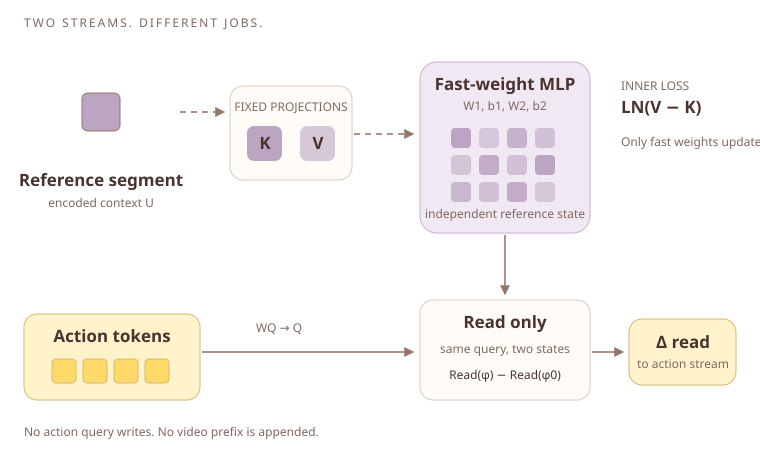
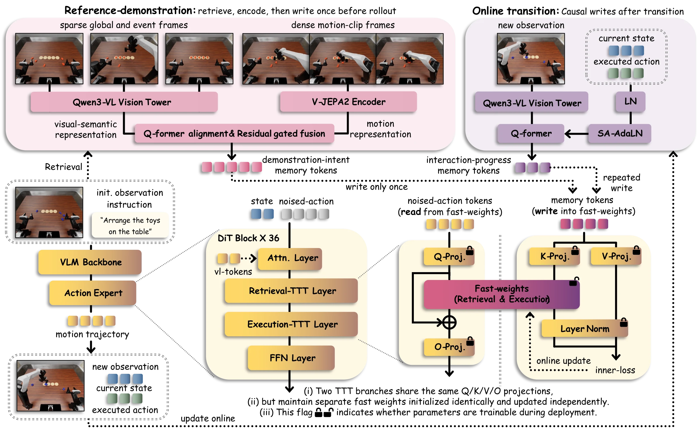
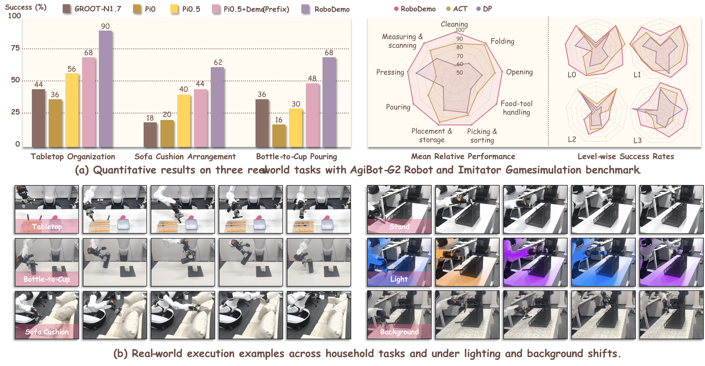

02 / METHOD
Two memories.
One coherent action.
Store what should happen. Update what actually happened.
Read them in that order.
Retrieval-TTTDemonstration-intent memory. Preloaded before rollout, then protected.
Execution-TTTInteraction-progress memory. Written only after real transitions complete.
Now
01Inside an Action-DiT blockOne action stream. Two reads. A deliberate order.

02Cross-Memorization: who writes, who reads?Context K/V writes. Action-side Q only reads.
Store context in weights. Query it from a different stream.


Video fallback and editable SVG


THE FRAMEWORK / FROM VIDEO TO ACTION
A human demonstration becomes persistent context.
Hierarchical Global-Event-Clip sampling combines broad procedure coverage, informative events and local motion. Frozen semantic and motion encoders align their outputs into reference registers; completed robot transitions update a separate execution state.

OPTIONAL REFERENCE / REFREWARD
No human video?
Retrieve a robot demonstration.
Refreward uses the instruction and initial observation to rank compatible robot episodes. The selected video supplies the same intent-memory interface used by human demonstrations.
The initial image and instruction become semantic and spatial tokens.
03 / EXPERIMENTS / BENCHMARKS
The benchmark, without the blur.
Five checkpoints. All task-level results. One reproducible evaluation protocol.
THE COMPLETE RELEASE / FIVE CHECKPOINTS
Every task. Every level. Every trial.
Browse 360 task-level results and 3,600 episode records. The GitHub result package also includes paper baselines, ablations, real-world experiments and inference measurements.
| Checkpoint | Updates | Reference | Seen | Unseen |
|---|---|---|---|---|
| RoboDemo-c15 | 90,000 | Human | 89.5 | 0.0 |
| RoboDemo-c30 | 160,000 | Human | 94.0 | 0.5 |
| RoboDemo-c45 | 260,000 | Human | 88.5 | 11.5 |
| RoboDemo-c15-wo | 100,000 | Retrieved robot | 90.0 | 0.0 |
C15-wo uses task-matched retrieved robot references. Its Unseen tasks are held out from policy training; robot references come from the benchmark training bank.
360 TASK-LEVEL RESULTS / 3,600 EPISODES
Explore the complete evaluation.
| Model | Split | Task | Level | Successes | Episodes | SR (%) |
|---|
Full50: compare all 50 tasks with ACT and DP
1,692 / 2,000 trials
50 tasks × 4 levels × 10 trials
Nine group means lead under this post-hoc grouping. Not every task or every level leads. Polygon area is not success rate.
Evaluation protocol and chart guide
Full50 evaluates 50 tasks at four scene levels, with ten trials per task and level. The released 240,000-update checkpoint succeeds in 1,692 of 2,000 trials (84.6%). ACT and DP score 74.9% and 64.1%.
L0: same scene. L1: new positions. L2: new appearance. L3: new object function. The nested-corpus evaluations below separately report Seen and Unseen tasks.
Each chart group averages task success rates. The relative view divides by the best method in that group. Overall success weights all 50 tasks equally. The nine chart groups and five appendix reporting groups provide two views of the same task-level values.
All 50 tasks and the paper's five reporting groups
Best AvgGold + bold marks the best model in Avg only, for each task and summary row. All ties are highlighted.
Download exact data (JSON)
04 / DEMOS / HUMAN TO ROBOT
Watch the input.
Inspect the outcome.
Selected qualitative cases, with the full ending left in.
REAL WORLD / AGIBOT-G2
From a demonstrated procedure
to everyday manipulation.
Tabletop organization, cushion arrangement and pouring, with additional lighting, background and scene variations.
ALTERNATIVE INPUT / RETRIEVED ROBOT VIDEO
A retrieved procedure.
A new execution.
RoboDemo-c15-wo uses a robot demonstration in place of a human reference. This pair links the selected reference to its recorded policy rollout.
05 / OPEN RESOURCES
Build on RoboDemo.
Evaluate a checkpoint
Single-GPU and multi-GPU scripts, trial selection, and recorded logs.
02 / UNDERSTANDVideo + state → actions
A small recorded example of reference preload and causal execution-memory updates.
03 / RETRIEVERefreward resources
The selected scorer, teacher annotations and feature-reconstruction tools.
Architecture, inference and evaluation are public. Training code is the next release.
Anonymous citation
@misc{anonymous2027robodemo,
title = {RoboDemo: Reconciling Demonstration Intent and Execution
Progress for Long-Horizon Manipulation},
author = {Anonymous Authors},
year = {2027},
note = {Manuscript under review}
}